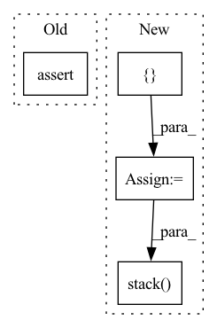

Pattern ID :25169
Before Change
loss: `torch.autograd.Variable`
:math:`-\mathrm{logpreds} \cdot \mathrm{targets}`
assert logpreds.size() == targets.size()
result = -logpreds * targets
// Sum across dims if axis given or more than 1 dim
if dims is not None:After Change
return log_categorical_crossentropy_1_hot(log_preds, targets)
n_classes = log_preds.size()[1]
n_elements = 0
losses = []
for i_class in range(n_classes):
mask = targets == i_class
mask = mask.type_as(log_preds)
n_elements -= th.sum(mask)
losses.append(th.sum(mask * log_preds[:,i_class]))
return th.sum(th.stack( losses) ) / n_elements
def l2_loss(model):In pattern: SUPERPATTERN
Frequency: 3
Non-data size: 4
Instances Fragment ID: 76965604
Project Name: braindecode/braindecode
Commit Name: a294170aab00bfa17778ad48b52150bbe72c0bd0
Time: 2017-10-03
Author: robintibor@gmail.com
File Name: braindecode/torch_ext/losses.py
M Class Name: AnonimousClass
N Class Name: AnonimousClass
M Method Name: log_categorical_crossentropy(2)
N Method Name: log_categorical_crossentropy(3)
M Parent Class:
N Parent Class:
M File Name: braindecode/torch_ext/losses.py
N File Name: braindecode/torch_ext/losses.py
M Start Line: 4
M End Line: 31
N Start Line: 56
N End Line: 66
Before Change
)
output = net(inputs)
assert output.shape[-1] == 5
// CAN"T RETURN HIDDEN STATE ONLY SOMETIMES DUE TO JITAfter Change
)
output, hn = net(inputs)
output_l = []
hn_t = None
for t in range(inputs.shape[1]):
out_t, hn_t = net(inputs[:, t, :].unsqueeze(1), hn_t)
output_l.append(out_t.squeeze(1))
out_steps = torch.stack( output_l, dim=1)
assert torch.all(
torch.lt(torch.add(out_steps, -output), 1e-3)
), "LiGRU output mismatch" Fragment ID: 76965605
Project Name: speechbrain/speechbrain
Commit Name: 2632c7ca72ae1b904874576ec373ae89ff524731
Time: 2020-09-22
Author: plantinga.peter@protonmail.com
File Name: tests/unittests/test_RNN.py
M Class Name: AnonimousClass
N Class Name: AnonimousClass
M Method Name: test_RNN(0)
N Method Name: test_RNN(0)
M Parent Class:
N Parent Class:
M File Name: tests/unittests/test_RNN.py
N File Name: tests/unittests/test_RNN.py
M Start Line: 19
M End Line: 142
N Start Line: 25
N End Line: 128
Before Change
sink_states_mask = new_states.is_sink_state
if self.evaluate_log_probabilities:
assert (
trajectories_log_pfs is not None
and trajectories_log_pbs is not None
and self.backward_actions_sampler is not NoneAfter Change
trajectories_states: List[StatesTensor] = [states.states_tensor]
trajectories_actions: List[ActionsTensor] = []
trajectories_logprobs: List[LogProbsTensor] = []
trajectories_dones = torch.zeros(
n_trajectories, dtype=torch.long, device=device
)
trajectories_rewards = torch.zeros(
n_trajectories, dtype=torch.float, device=device
)
step = 0
while not all(dones):
actions = torch.full(
(n_trajectories,),
fill_value=-1,
dtype=torch.long,
device=device,
)
log_probs = torch.full(
(n_trajectories,), fill_value=0, dtype=torch.float, device=device
)
actions_log_probs, valid_actions = self.actions_sampler.sample(
states[~dones]
)
actions[~dones] = valid_actions
log_probs[~dones] = actions_log_probs
trajectories_actions += [actions]
trajectories_logprobs += [log_probs]
if self.is_backward:
new_states = self.env.backward_step(states, actions)
else:
new_states = self.env.step(states, actions)
sink_states_mask = new_states.is_sink_state
step += 1
new_dones = (
new_states.is_initial_state if self.is_backward else sink_states_mask
) & ~dones
trajectories_dones[new_dones & ~dones] = step
trajectories_rewards[new_dones & ~dones] = self.env.reward(
states[new_dones & ~dones]
)
states = new_states
dones = dones | new_dones
trajectories_states += [states.states_tensor]
trajectories_states = torch.stack(trajectories_states, dim=0)
trajectories_states = self.env.States(states_tensor=trajectories_states)
trajectories_actions = torch.stack(trajectories_actions, dim=0)
trajectories_logprobs = torch.stack( trajectories_logprobs, dim=0)
trajectories = Trajectories(
env=self.env,
states=trajectories_states, Fragment ID: 76965603
Project Name: saleml/gfn
Commit Name: 095aeaefbabb8e69ada4d72b7f158d5f687f387b
Time: 2022-10-25
Author: salemlahlou9@gmail.com
File Name: src/gfn/samplers/trajectories_sampler.py
M Class Name: TrajectoriesSampler
N Class Name: TrajectoriesSampler
M Method Name: sample_trajectories(3)
N Method Name: sample_trajectories(3)
M Parent Class:
N Parent Class:
M File Name: src/gfn/samplers/trajectories_sampler.py
N File Name: src/gfn/samplers/trajectories_sampler.py
M Start Line: 58
M End Line: 119
N Start Line: 47
N End Line: 106